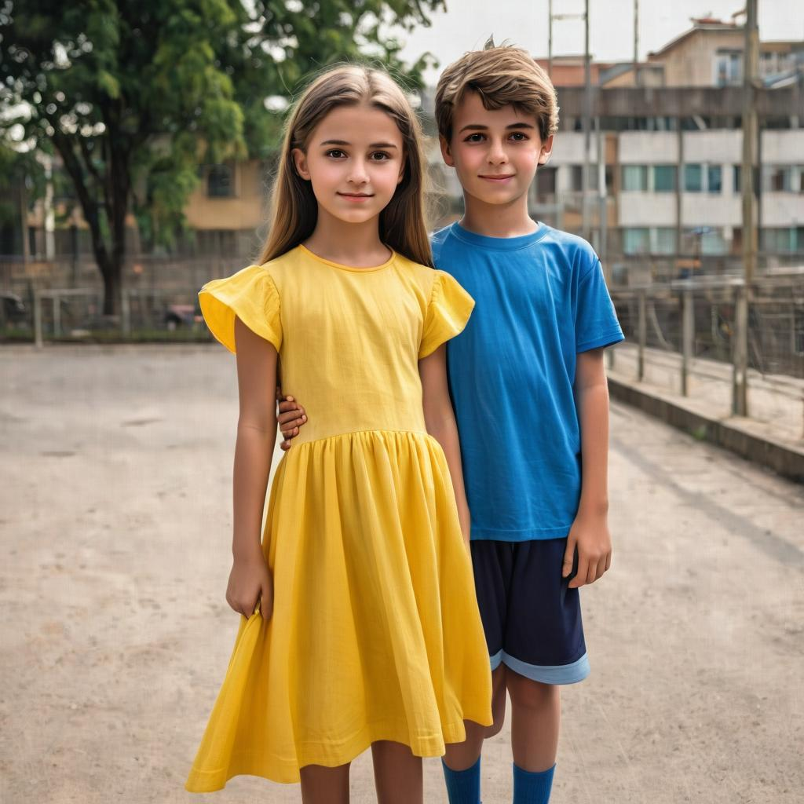
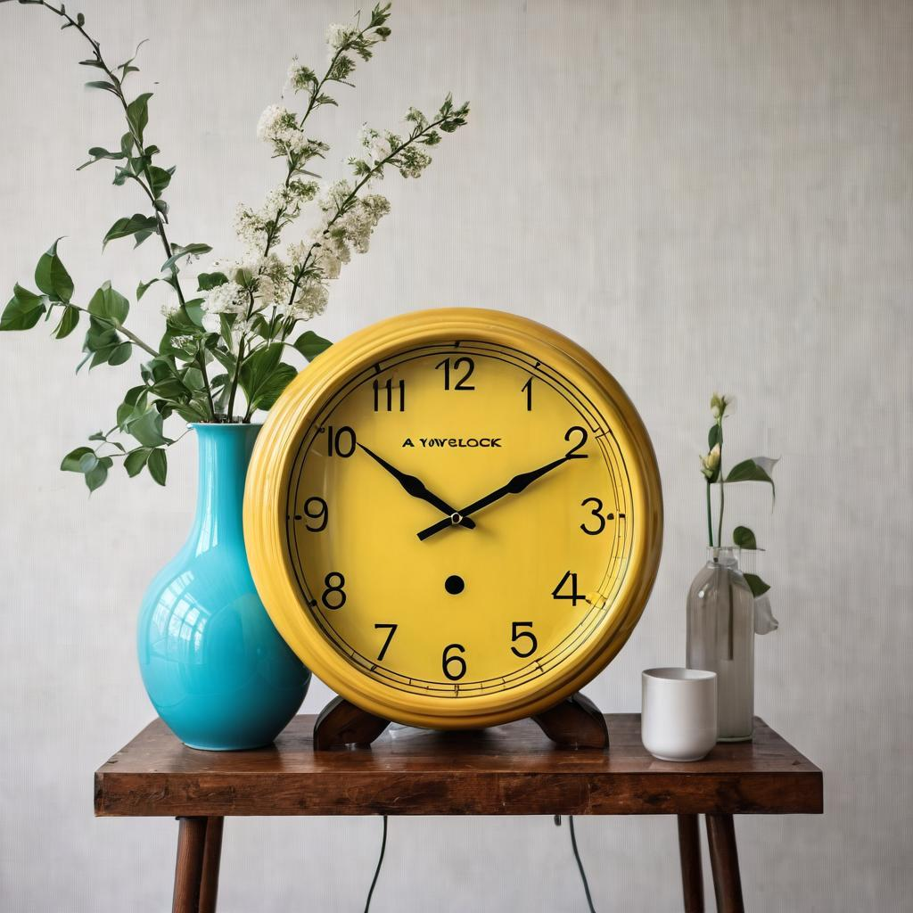

Framework
Figure 2. LaRender replaces cross-attention with Latent Rendering layers. Using an occlusion graph, objects are sorted back-to-front. Each cross-attention layer extracts object-wise latent features, from which transmittance maps are estimated. An orthographic camera captures these features, and Latent Rendering generates a scene that preserves physical occlusion.
Occlusion Control
Click the buttons to change the occlusion order.



Semantic Opacity Control
Move the sliders to control the opacities.


BibTeX
@inproceedings{zhan2025larender,
title={LaRender: Training-Free Occlusion Control in Image Generation via Latent Rendering},
author={Zhan, Xiaohang and Liu, Dingming},
booktitle={International Conference on Computer Vision},
year={2025},
}